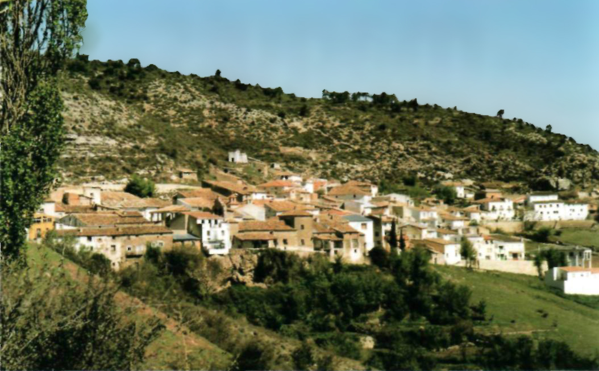
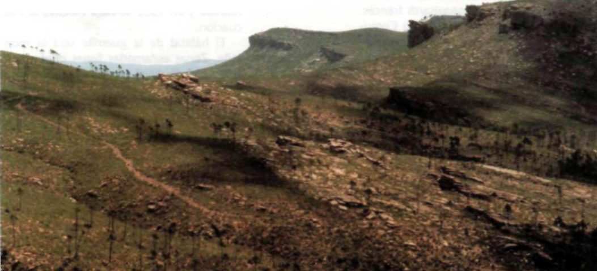
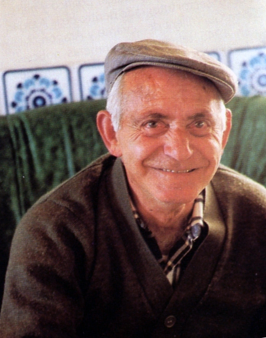
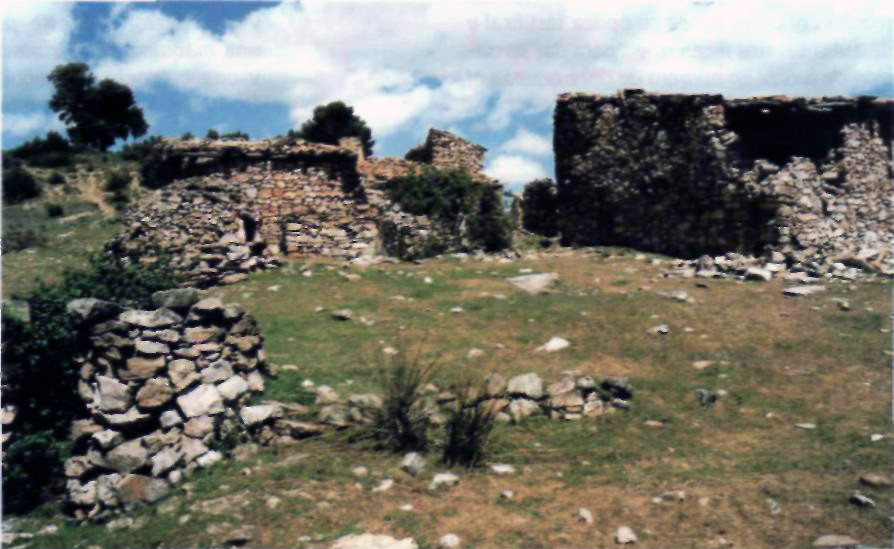
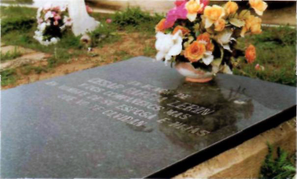
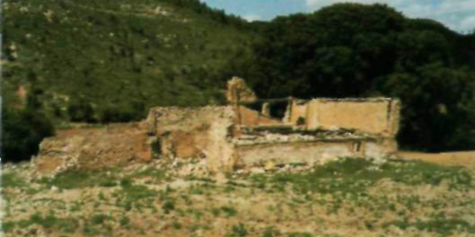
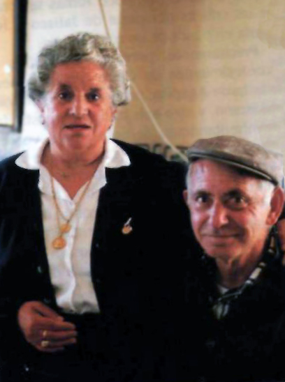
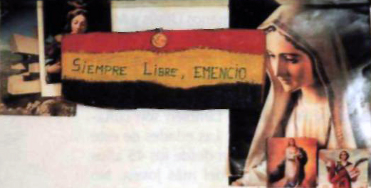

Texto publicado en la Revista Olcades, 2a época, nº 3, Cuenca, 2000, pág. 29-39. Corregido.
La guerra civil terminaba en la primavera de 1939. Desde las últimas posiciones del frente hubo que volver a casa o atravesar Los Pirineos. La vuelta, escrito está, no fue fácil. El compromiso adquirido con el ejército republicano no facilitaba las cosas. El exilio fue una puerta para multitud de españoles. Otros pasarían años y años de cárcel, decenas de miles fueron fusilados, algunos vivirían escondidos en sus casas. En todos ellos había un compromiso de afinidad política de izquierdas, aunque con difícil y conflictivo entendimiento. Esa actitud de creencias republicanas hubo que enterrarla tras 1939, pero quedó un poso de simpatía y un débil tejido de clandestinidad que servirá como caldo de cultivo, además de las propias circunstancias naturales, sobre el que se asentará y mantendrá durante el tiempo que dure la guerrilla antifranquista.

Sobre estas líneas, San Martín de Boniches, de donde salieron 14 guerrilleros (Foto de Santiago Torralba).
LA GUERRILLA ANTIFRANQUISTA EN LA PROVINCIA DE CUENCA
Pero si a principios de 1939 terminaba la guerra civil, ese mismo año se iniciaba la segunda guerra mundial, que duraría hasta 1945. Durante seis años, tuvo lugar una de las contiendas más crueles que recuerda la humanidad. Desde la España fascista, en apoyo de las fuerzas alemanas salió la División Azul, pero también con españoles en el exilio se nutrió el ejército ruso y muchas de las partidas francesas que combatieron en acciones de guerrillas a los ocupantes alemanes. Es el maquis, el maquisards francés.
Durante el año 1944 el Partido Comunista en el exilio, con Monzón como responsable, diseña una estrategia de Unión Nacional Española para, previendo el final de la contienda europea, lograr que las potencias aliadas intervengan en España y liberen al país del poder militar de Franco. De hecho, para los maquis, la liberación de Francia era un preludio del derrocamiento del régimen franquista. Así, en el mes de octubre, coincidiendo con la toma de París, lanzaran una ofensiva a lo largo de los Pirineos, principalmente por el Valle de Arán como estrategia de inicio. Varios miles de hombres, salidos en su mayoría de la resistencia francesa, llegarán hasta Viella, pero a la postre serán contenidos y expulsados. Un grupo importante, sin embargo, logrará atravesar las líneas e irá desperdigándose por los montes. Coincidiendo con esa circunstancia, el PCE variará pronto su táctica y planeará y ejecutará un segundo plan de intervención interna. Sobre Monzón y su equipo de colaboradores recaerá la responsabilidad por el fracaso anterior y ahora será Carrillo quien asuma la nueva dirección. Así creará la guerrilla y sobre todo desde chantiers, con escuela de guerrilleros, se irán enviando partidas a lo largo de los años que van desde finales de 1944 hasta 1950. En el 1951 se dará la orden de retirada y en 1952 se hará efectiva la evacuación.
El hábitat de la guerrilla será la montaña. Zonas escarpadas llenas de matorral y bosque, de difícil acceso, desde sus lugares altos con amplia visibilidad, habitada por pastores, agricultores, resineros, con rentos, masías, majadas, molinos y pequeñas aldeas hoy en día despobladas y en ruinas. Allí la vida, siempre de acecho y cautelas, se entretejió entre caminatas nocturnas y obligados descansos de día con tiempo para la preparación política, organización del campamento, asignación de servicios, discusión de acciones, leer, escribir, etc. Desde los pueblos del Alto Tajo hasta la confluencia de Cabriel y Júcar, desde Priego, Villarejo de la Peñuela, Tebar, hasta las aldeas que lindan con el Turia se enmarca el quehacer político y militar del 5º Sector integrado dentro de la Agrupación Guerrillera de Levante y Aragón.
En 1945 tenemos las primeras noticias de la presencia de maquis en la Sierra de Cuenca. Los nombres de “Capitán”, “Frasquito”, “Jalisco”, “Medina”, “Paisano”, “Chato”, “Vitini”, entre otros, son seguramente de esta época a los que pronto se unirían los del “Manco de La Pesquera”, “Manolete”, “Núñez”, “Pena”, “Pintado”, “Samuel”, “Segundo”, “Tomás”, “Valencia”, “Zapatero”, etc. Para entonces, la estructura organizativa será muy laxa, firmarán sus comunicados como “Grupo 595 de guerrilleros” y ante la persecución de la guardia civil y tras algunos enfrentamientos se refugiarán en las proximidades de algún rento de la zona de Cañete a cuyos moradores ayudarán en las faenas del campo por las noches.
En 1946 se crea el AGLA con sus cuatro Sectores. El 5º, sucintamente, corresponde a la demarcación de Cuenca. Los años 1947, 1948 y 1949 hasta el enfrentamiento de Cerro Moreno son de gran actividad. La llamada “ofensiva de primavera” de 1947 propiciará múltiples acciones. En 1948 y 1949 hay un cambio de estrategia. Siguiendo los consejos de Stalin recogidos por la dirección del PCE: en lugar del enfrentamiento directo se favorecen las acciones de propaganda política. Los años 1950 y 1951 son de dura supervivencia, los guerrilleros andan de un lado para otro sin grandes objetivos, diezmadas las partidas y con apenas contacto con la estructura de mandos. En 1952 ya no quedan guerrilleros en las Sierras de Cuenca, sólo la partida de “Fortuna” actúa por el sur, pero más en la zona de la Muela de Cortes de Pallás. Los últimos en fallecer serían “Samuel” en Tierra Muerta, y “Mauro”, “Loreto” y “Chatillo” en Reíllo. En el verano de 1952 diecisiete guerrilleros de la AGL, entre ellos seguramente “Segundo”, “Chato”, Reme y Sole, después de 30 días interminables, pues su guía “Emilio” había muerto en el enfrentamiento donde fuera capturado “el Manco de La Pesquera”, logran pasar Los Pirineos. Catorce del Sector 5º se habían entregado, entre ellos los únicos cuatro supervivientes del total de los que se echaron al monte en San Martín de Boniches.
Resulta obvio pero, por si acaso, permítaseme este punto y aparte: no se ha de olvidar que esto no es más que un artículo periodístico con fines divulgativos, una mezcla de saber e interesar y hasta si se quiere de propiciar el interés y el estudio. Nos falta un historiador a la manera de don Fermín Caballero, o de los que, al estilo decimonónico, se pateen la provincia y revisen en este caso más los archivos que las bibliotecas y hablen con la gente. No obstante, ahora que ya contamos con una juventud mejor preparada y con distrito universitario, es más que deseable que surjan estudios aclaratorios interpretativos de este periodo histórico, ya del siglo pasado, y donde más que lápiz y libreta se utilicen todos los medios de registro audiovisuales que la técnica nos ha puesto al alcance.
EL TERRITORIO DE SAN MARTÍN DE BONICHES.
Uno de los lugares que más se singularizó en la provincia de Cuenca por su apoyo a la guerrilla fue San Martín de Boniches, en el partido judicial de Cañete. En los años cuarenta contaba con bastante más de medio millar de habitantes, con 459 hacia mediados los sesenta y 138 en 1977, dentro de ese proceso de inmigración que representaron esas dos décadas para la inmensa mayoría de los pequeños pueblos del interior castellano-manchego. El pueblo, con parecida fisonomía y encanto durmiente por las arrugas de los años transcurridos, situado en la zona norte y oriental de la provincial de Cuenca, forma parte de ese cinturón boscoso que dio cobijo, y también todo lo contrario, a la guerrilla. A este respecto, conviene recordar que cuando se inicia la invasión de Los Pirineos, se mandan emisarios a la retaguardia nacionalista para pulsar el sentir de las gentes del campo cara a un posible levantamiento popular y su consiguiente apoyo a los combatientes, y los informes que llevan a los jefes “no pueden ser más desalentadores”. La gente no quería más guerra. Comprensible es entonces que algún guerrillero opinara que el Sector 5º fue el más duro de toda la AGL. Igualmente comprensible y doblemente meritorio resultará el esfuerzo de los guerrilleros conquenses que a pesar de todas esas dificultades supieron alentar su espíritu de rebeldía contra un poder ilegítimo. No será difícil encontrar enlaces en los pueblos de Cardenete, Henarejos, Villar del Humo, Motilla, Iniesta, Monteagudo, Landete, Santa Cruz, Campalbo, Sotos, Mariana, Campillo, La Pesquera, Villanueva de la Jara, El Picazo, Tebar, Cuenca, etc. y si estuvieran a la vista los expedientes de los interrogatorios, y hora es ya de que se unifiquen en un archivo histórico todos los documentos de este periodo, a buen seguro llenaríamos un buen montón de tomos.
Cercano al Rincón de Ademuz, a la Sierra de Camarena, a los Montes Universales, con el río Turia a no muchas horas de distancia, en una imagen de tránsito a pie, y el Cabriel separando Serranía Baja y Alta, todavía más próximo, San Martín de Boniches ofrecía amplias posibilidades como ruta en la distribución geográfica de la guerrilla que uniera el Levante con el Centro. A esa geografía aportará, junto con los pueblos limítrofes, sus montes más cercanos, como la Sierra de Las Cuerdas, Collado Molar, La Menglana, Cueva Mediana, Cabeza del Royo, El Rufel, El Haba, y sobre todos ellos El Molatón y el búnker del Bercoloso, dos de los lugares donde se situaron los que seguramente fueron los últimos campamentos estables de la guerrilla del 5º Sector. Pinares, ahora devorados por un espantoso incendio de mediados de los años noventa, sabinas, encinas, robles, enebros y sotobosques de jarales y brezos son el hábitat de los guerrilleros. Así lo poetiza uno de ellos: "Entre follaje y veneros / tras los últimos puntales I existen los matorrales I donde viven guerrilleros". La guardia civil sobre este territorio trazó un organigrama de demarcaciones y destacamentos que prácticamente no dejaron aldea sin cubrir. Las carreteras de Teruel, de Mira o de Landete, contaban en casi todos sus pueblos con un puesto permanente de guardias, y bajo su supervisión dos o tres destacamentos con sitios fijos en las pequeñas aldeas y en los rentos bien poblados por estas fechas. Hasta cuarenta puestos podríamos enumerar. Tampoco puede obviarse la presencia represora de las unidades móviles, las contrapartidas, el somatén, delegados de Falange y la estructura del poder oficial.
LOS MAQUIS EN LAS MONTAÑAS DE SAN MARTÍN.

Fotografía: Vista general de las montañas de la Serranía de Cuenca, en San Martín de Boniches, tras el pavoroso incendio, por las que transitaron los maquis que protagonizan este trabajo (Foto de Santiago Torralba).
Todavía, sobre calles de intemperie terrosa, casi no había luz eléctrica en el pueblo se tuvo noticia de los primeros maquis. Durante 1946, organizados los Sectores y con “Tomás” (Atilano Quintero Morales) como jefe, siguen llegando refuerzos guerrilleros desde Francia. A ellos se les suman los primeros maquis de la provincia, gente que había participado activamente en la guerra civil con el bando republicano, militantes activistas de izquierdas, comunistas y cenetistas mayormente, y simpatizantes de su causa. Los pueblos limítrofes y el propio San Martín son escenario de múltiples escaramuzas de carácter económico, de agitación política y de acciones de sabotaje de trenes y tendido eléctrico. Las aldeas, los molinos, pero sobre todo los rentos son lugares frecuentados por la guerrilla: como los de Fuenteaca, Torre López, Las Dehesas, El Royo, La Nava, Tormeda, Alcobillo, etc. La Sierra de las Cuerdas deja paso a una expansión mayor, con grupos ya más definidos. En estas acciones también se dan algunas muertes, como la de “Frasquito”, aun cuando los enfrentamientos más fuertes dentro del 5º Sector, por estas fechas, se trasladen a la zona de La Pesquera, donde se producen situaciones semejantes y tras la muerte de “Rodolfo” (Fulgencio Giménez) a principios de 1947 habrá que reorganizar el Sector.
La noche del 19 de septiembre de este año, 1946, una partida mandada por “Paisano” entra en San Martín de Boniches. Las crónicas oficiales desde su óptica testifical y de autoridad nos dicen que "para dar sensación de fuerza en número de doce ocupan el pueblo durante un par de horas. Se apoderan de cuanto pueden entre la mayoría del vecindario que, aterrado, no opone resistencia. Temían ser asesinados. Luego marchan al Ayuntamiento, roban los sellos oficiales y rompen los retratos del Generalísimo y José Antonio".
En la pequeña plaza del pueblo, entonces doblemente sombreada por ser de noche y por la mole imponente de sus ahora ya extintos olmos, un joven vecino del pueblo, Agustín, fue el primero en encontrarse con ellos y preguntar inocente: “¿Es que hay cine?”, para decir, tras ver sus pistolas: “¡Madre, que hay en la plaza unos hombres malos que le quitarán las perras!”. En las Memorias de “Germán”, Emencio Alcalá Ruiz, uno de los catorce guerrilleros de San Martín (próximas a editarse con el sello editorial del Ayuntamiento de Cuenca), se nos da una versión más ajustada: “De cuando entraron en el pueblo, lo recuerdo bien. El venir al pueblo fue por el motivo que aquí los guerrilleros se enteraron de que la ración que al pueblo venía se perdía la mitad. Lo que pasó fue que al responsable de todo esto no lo hallaron en el pueblo. Una cuñada le avisó que aquella noche venían los maquis al pueblo y este señor fue a esconderse a La Cabezuela. De este grupo que al pueblo entró el responsable era el “Paisano”, y se llevaron de este pueblo solamente una máquina de escribir del ayuntamiento y una escopeta del señor alcalde llamado Domingo. Yo, esta noche, tenía que bajarle la cena a mi padre que estaba con el cabrío en el sitio llamado el Pico la Peña el Tocado. Salí de mi casa calle adelante. Llegué a una casa y la señora venga a llorar, y su marido llamado Francisco era familia de mi padre. Yo entré y digo: “Tía Caya, ¿qué pasa?”, y dice: “Que han venido unos hombres y aquí en la puerta le han disparado y yo estaba en la despensa y a la que he salido ya se lo habían llevado”. Yo, con todo, seguí mi marcha y cuando llegué a la plaza estaba toda blanca de octavillas que habían echado. Yo me agaché y cogí dos o tres. Se acercó un señor y me dijo: “Eso se hace”. Me fijo y en la pared había otro señor escribiendo y aún recuerdo lo que ponía: “Muera Franco y más libertad”. Cuando llegué a donde estaba mi padre le di los papeles que yo había cogido en la plaza y me dice: “¿Esto de dónde lo has sacado?”. “De la plaza, está llena”. Lo leyó y no me dijo nada. Al día siguiente todo se arregló. Al tío Francisco no le pasó nada. Es que era un civil retirado y fueron dos maquis a su casa y al verlos trató de cerrarles la puerta, y “Manolete” que era el guerrillero disparó un tiro a la puerta, y la puerta la dejó libre. Esto fue que a todos los reunieron en el ayuntamiento, al señor alcalde y al señor secretario llamado Florencio, y así a todos, pero a ninguno le pasó nada”.
|
LOS CATORCE GUERRILLEROS DE SAN MARTÍN DE BONICHES |
Nombre |
Apodo |
Edad |
Familia en 1949, (después de 1949) |
Profesión |
Fallecimiento |
Alcalá Laguna, Cayo |
“Felipe”, 2ªfase |
1906/1950 |
Florencia: Emencio. Marino, Adora, Victoria, Cayo |
Albañil |
Carboneras de
Guadazaón |
Alcalá Ruiz, Emencio |
“Germán” |
1928/... |
(Carmina: Maribel) |
Pastor, resinero |
|
Alcalá Ruiz., Marino |
“Fermín” |
1931/1949 |
|
Pastor |
Cerro Moreno |
Huerta Jimenez. Amador |
“Cándido”,2ª fase |
1905/1949 |
Josefa: Carmen. |
Resinero |
Cerro Moreno |
Huerta Pla, Aurelio |
“Nicasio” |
I906/I949 |
Fermina: Avelio, Finita y Trini. |
Resinero |
Cerro Moreno |
López Alarte, Basilio |
“Ángel” |
1904/1949 |
Maria: Fidel. Basilio, Daniel, Elvira y Julián. |
Pastor y resinero |
Cerro Moreno |
Navarro Cruz, Daniel |
“Agapito” |
1908/1959 |
Eugenia: |
Resinero |
Burgos |
Navarro Cruz, Francisco |
“José”, “Manolo” |
1909/1950 |
Estebana: Andrés, Ovidio y Fidelia. |
Resinero |
Arcos de la Sierra |
Pérez Hernandez. Antonino |
“Conrado”,2'fase |
1910/1949 |
Dolores: José |
Pastor |
Cerro Moreno |
Ruiz. Pérez, Jesús |
“José” |
1908/2000 |
Martina: Jesús, Juliá |
Resinero |
San Martin dc Boniches |
Ruiz Pérez. Melitón |
“Alfaro” |
1911/2008 |
Adoración: Eleuterio, Valentina. |
Pastor y resinero |
|
Sánchez. Huerta, Heliodoro |
“Asturias” |
1929/1951 |
|
Resinero |
Villarta |
Sánchez. Huerta, Julián |
“Martin” |
1926/1950 |
Araceli: |
Resinero |
Sotos |
Yuste Ribes, Prudencio |
“Pedro” |
1903/1951 |
Maria: Mateo, Nicanora, Lecontina, Prudencia, Bienvenido, Nati. |
Resinero |
Mira |
Durante los años siguientes, 1947, 1948 y buena parte de 1949, el centro de operaciones de la guerrilla por esta zona se trasladará hacia el sur del término de San Martín, colindante con Villar del Humo, Henarejos y Víllora. La Menglana, Collado Molar, Cabeza del Royo, el pico del Águila, El Bercoloso, serán lugares habitados por las partidas de “Paisano” principalmente y por la del “Manco”. La de “Segundo” actuará por las cercanías de Cuenca en su lado sur, en tanto que la de “Roberto” tendrá su base en la zona de Arcos de la Sierra y El Campichuelo.
En ese tiempo, aunque se van dando algunos casos destacados posteriores a los acaecidos en el rento de las Dehesas y en el Royo, la gente de San Martín convive en silencio con la guerrilla a la que ayuda, al igual que en otros pueblos, con enlaces y puntos de apoyo. Precisamente la cautela parece ser una de las normas de actuación de este grupo de enlaces, que además de sus interrelaciones familiares parece bien organizado: al menos, Cayo ejerce de jefe de la célula de apoyo a la guerrilla, la casa de la señora Eugenia es el lugar encargado de “hacerles la comida”, Aurelio el que se traslada a los pueblos cercanos para realizar las compras de víveres y Emencio uno de los que con más viveza recorre la ruta del pueblo al monte para asistirles. Precisamente esta buena organización hace que, durante tres años nada menos, la guerrilla tenga una base de operaciones bastante segura en San Martín de Boniches.

Fotografía: Rentos, parideras. refugios de todo tipo, La Menglana en la foto, hoy en su mayor parte derruidos, sirvieron para alojar a los guerrilleros en su permanente trasiego por las montanas (Foto de Santiago Torralba).
La actuación de los guerrilleros en estos años les lleva a enfrentamientos y voladura de líneas férreas en Cardenete, Monteagudo, Salinas del Manzano, Villarejo de la Penuela, etc., y entradas en los pueblos de El Cubillo, Villar del Humo, Algarra, aunque un hecho determinante será la presencia de las contrapartidas por la zona, ya a partir del año 1948. Los sucesos del rento del Royo habían dejado secuelas. Poco tiempo después, dependiendo de Villar del Humo, se instalaría una dotación de guardias en San Martín de Boniches. En El Royo, zona de labor sita en Henarejos y regentada por la familia Alfaro, de Víllora, había ocurrido que, según unos, “Paisano”, con la puntería que le caracterizaba, da muerte tras el reflejo de la luna en una de las insignias del tricornio a un cabo de la guardia civil. Aún siendo substancialmente así, parece que fue “Manolete” quien hizo uso de su metralleta, en tanto que “Paisano” defendía la retirada del rento y los compañeros del grupo huían de la casa saliendo a gatas bajo el arco de sus piernas. A finales de 1949, hasta las dependencias del cuartelillo de San Martín sería llevado, tras su entrega, uno de los maquis pertenecientes a la partida de “Paisano”: “Regino”. “¡Han detenido a tu padre!”, cuenta “Germán” que le dice Basilio. La medida iba encaminada a detener a enlaces, con la consiguiente represión que ello suponía. En muchos pueblos donde actúa el 5º Sector saben lo suyo del tema. "Creo que están en la Cueva de los Heridos", le responde “Germán”, y hacia allí se fueron.
EN LA CUEVA DE LOS HERIDOS
De enlaces a guerrilleros también podríamos haber titulado este apartado, significando al mismo tiempo la virtud de ejemplo que tiene la historia de los guerrilleros de San Martín de Boniches, para entender con toda la extensión posible el panorama de la guerrilla en la Sierra de Cuenca. Recién comenzado el otoño de 1949 diez enlaces de San Martín se echan al monte ante la dura represión que les esperaba. El que haría el numero once, el joven Marino Alcalá, sería llamado al día siguiente por “Martín”, previo consentimiento de “Paisano”, el jefe del grupo al cual fueron a acogerse.
Conservamos una breve narración de esos momentos, seguramente redactada por “Martín” o por “Nicasio”, dos de los guerrilleros más comprometidos políticamente del grupo, donde se nos señala qué guerrilleros estaban en esos momentos en la cueva y cuáles fueron los primeros haceres familiares, algunos de los cuales quedarían como imprevisto adiós definitivo Entre los guerrilleros, todos ellos integrantes de la partida de “Paisano”, se encontraban “Núñez”, “Antonio”, “Zapatero” y el propio “Paisano”, a los que habría que añadir a “Chato”.
“Camaradas: el 28 de septiembre a la salida del lucero, salimos de nuestro pueblo once o doce compañeros, por fin ya llegó la noche, helados nos echamos a dormir en la Cueva los Heridos. Al otro día de mañana, sobre medio día, bajaron nuestras mujeres y nos bajaron comida. Ya nos despedimos de ellas. Se fueron con muchos lloros y nosotros nos fuimos a donde estaban los otros. Fuimos umbría arriba y nos subimos a un tormo donde estaban esperando “Núñez”, “Paisano” y “Antonio”, me dejo uno sin nombrar, eso es lo que yo no quiero, que por nombre le llamábamos camarada “Zapatero”. Nos fuimos todos a la cueva, nos pusimos a cenar para nada más comer empezar a caminar, ya salimos de la cueva todos en muy buena unión, cuando bajamos al río bajaba un gran turbión. Al ver el río crecido todos allí nos enfadamos, pero no hubo más remedio que pasar el río a nado”. (Fernanda Romeu Alfaro: La Agrupación Guerrillera de Levante, Valencia, Edicions Alfons el Magnànim, 1987, pág. 181).
El día 28, de madrugada, salen hacia el monte: Emencio, Aurelio, Basilio, Daniel, Francisco, Jesús, Melitón, Heliodoro, Julián y Prudencio y poco después, como señalamos, Marino. En la Cueva de los Heridos pasarían la noche, al día siguiente las madres y mujeres les traerían ropa y comida, y a partir de ahí, caminatas y más caminatas nocturnas. El cruzar el río de San Martín, que se cita en la nota, es todo un símbolo de sus haceres posteriores.

Una lápida, de moderna implantación, cubre los restos de César García Lerín “y dos compañeros más” (se trata de “Chatillo” y de “Mauro” (Foto de Salvador F. Cava).
Un primer problema que debió de plantearse ante la incorporación tan masiva de guerrilleros (por lo general, en estas fechas, los grupos estaban formados por ocho o nueve hombres, once más y de golpe, suponía un importante quebradero de cabeza), fue la infraestructura y la intendencia de los campamentos. “Paisano” lo percibe claramente y les dirá que van muy rápido, pero "por ésta, pase". Además, su presencia en el monte suponía todo el desmantelamiento de enlaces de la zona. Aun cuando las madres, las esposas y los hijos pequeños quedaban en el pueblo, había que buscar nueva gente comprometida que trasladara información y comida al monte sin levantar sospechas. De esta labor se ocuparía a partir de entonces Hilario Valero y también el exalcalde republicano, Francisco Henarejos, una vez libre de su detención al terminar la guerra civil. Al acabar el conflicto serían detenidos ambos durante algún tiempo.
Un primer problema que debió de plantearse ante la incorporación tan masiva de guerrilleros (por lo general, en estas fechas, los grupos estaban formados por ocho o nueve hombres, once más y de golpe, suponía un importante quebradero de cabeza), fue la infraestructura y la intendencia de los campamentos. “Paisano” lo percibe claramente y les dirá que van muy rápido, pero "por ésta, pase". Además, su presencia en el monte suponía todo el desmantelamiento de enlaces de la zona. Aun cuando las madres, las esposas y los hijos pequeños quedaban en el pueblo, había que buscar nueva gente comprometida que trasladara información y comida al monte sin levantar sospechas. De esta labor se ocuparía a partir de entonces Hilario Valero y también el exalcalde republicano, Francisco Henarejos, una vez libre de su detención al terminar la guerra civil. Al acabar el conflicto serían detenidos ambos durante algún tiempo.
Rento de Las Dehesas (Henarejos)

Rento del Royo en Henarejos (Foto de Santiago Torralba).
El Rento de Las Dehesas, como el del Royo, o el del Buitre y el de La Torre (más conocido como del Barbas), forman parte de la geografía del maquis conquense que actúa en la zona meridional de la provincia. El Rento de las Dehesas, por las fechas que nos ocupa pertenecía a la Casa de Alba, heredera del Marquesado de Moya, y estaba regentado por los Varea, originarios de Garaballa, quienes también ejercían de guardas y trabajaban las tierras. Otro guarda también de aquellas fechas fue Clemente García. Posteriormente el rento lo habitarían los Matallín y los Marquina. Esta última otra familia singularizada con los aconteceres de su entorno.
A finales de junto de 1946 la guardia civil sorprendió a un grupo de maquis en una casa de un vecino de Boniches. En el enfrentamiento resultó herido “Frasquito” quien moriría poco después en el Ayuntamiento tras tomarle declaración. Se trataba de Sebastián Núñez Castellanos, de 31 años de edad, natural de Santa Cruz de Mudela (Ciudad Real) que había combatido en Francia contra los alemanes. En algunos trabajos de investigación se considera a este guerrillero como jefe de grupo. Es posible que así fuera, aunque lo más probable es que perteneciera a la partida de “Paisano”, por aquellas fechas en vías de expansión, y que el grupo fuese un núcleo menor de la misma. Los historiadores de la guardia civil relacionan este hecho con la muerte poco después del rentero de Las Dehesas Domingo Varea, acusado por la guerrilla de informar de su presencia en la zona. Los estatutos y las normas internas de la AGL eran estrictos ante estas circunstancias de delaciones. Pero más que este suceso, es el asalto al rento del Royo un poco después lo que originaría tal represalia. Con todo, la trágica historia de la familia Varea no acabaría aquí. A principios de febrero, el día 6 de 1947, se completa con la muerte de los hermanos Lucio y Francisco, fusilados en una dependencia de ganado del rento, a manos también del grupo de “Paisano” culpándoles, en realidad no a ellos sino a un tercer hermano que no se hallaba presente, del enfrentamiento sufrido en Cabeza del Royo, con muertos y heridos por ambos lados.
Algo así pasaría en tiempo de su posterior rentero, Miguel Matallín, con uno de los moradores del rento: “Elementos de la partida de “Segundo”, el 24 de junto de 1951, nos narran los historiadores de la guardia civil exigen a su morador Aurelio Marquina Malavia, que les haga de cenar con dos ovejas del rentero Miguel Matallín. Después de comer y permanecer un par de horas en la casa se llevan a ambos. A Matallín le hacen volver, escoltado por dos forajidos, para recoger alimentos. Al regresar le dejan en libertad, pero a Marquina le ahorcan de un pino y le cuelgan un cartel, donde podía leerse: “Ha sido ajusticiado por chivato y verdugo del pueblo. Estos repugnantes seres no tienen derecho a vivir”. Substancialmente así ocurrió. La razón viene de no muy lejos. “Germán” en sus Memorias la narra. Lo inadecuado de la historia es que no fue la partida de “Segundo”, sino la del “Manco”, como así figura en su proceso militar, y que el rentero, se llamaba Eugenio Marquina Ferrer, y la fecha dos días después de la anotada.
Otro tema no menor sería la valoración de la trascendencia del paso que estas personas estaban dando. Pocas salidas les quedaban a los guerrilleros cuando se echaban al monte. La más probable, la muerte en alguna refriega o el abandono con el conguiente descrédito dentro de su organización, y el posterior juicio, cárcel y hasta posible fusilamiento; subsistir escondido en casa no parecía muy viable, y la retirada a Francia fue orden de última hora. Esta tesitura de lealtades y compromisos debió sugerirse en alguna de las primeras reuniones. “Paisano” parece ser que les planteó a modo de Hernán Cortes: "Bueno, ésta es la línea, estáis a tiempo de volveros al pueblo o quedaros como guerrilleros". Todos decidieron esto último. Es posible que pesara en su ánimo tanto el magnetismo de los hombres del monte, el miedo a la represión, los discursos políticos de los más comprometidos ideológicamente del grupo y la opinión de Cayo que al poco de ser detenido vuelve de Cuenca, más decidido si cabe a hacerse guerrillero.
Precisamente en el mes de octubre la cuantía de los maquis de San Martín se completaría. Cayo ha sido interrogado en Cuenca, pero al no encontrar motivos suficientes de detención se le deja en libertad. Tal vez contaba el gobernador con esa solución para hacer volver del monte a los que recientemente se habían marchado, entre ellos los dos hijos mayores y dos cuñados del propio “Felipe”. Así, a mediados de octubre, se personaría el propio don Gabriel Juliá Andreu en el pueblo, reuniendo a todo el vecindario en la plaza y dirigiéndose sobre todo a las madres, indicándoles que les hicieran llegar a sus hijos su palabra de que, si volvían, no les pasaría nada. Ni la estrategia ni la capacidad de convicción del gobernador dio resultado. Pocos días después, como queda dicho, el número de guerrilleros se completará con la marcha de Cayo, Amador y Antonino, aunque en este caso las razones son más de índole familiar que el miedo que acecha tras las primeras.
Una semana antes del fatídico 7 de noviembre, el campamento más cercano a Mohorte está rebosante de guerrilleros. Los jefes, “Tomás” (Víctor Plácido Pérez García) y “Pepito el Gafas” (Francisco Corredor Serrano), que acaban de llegar de Cerro Moreno, deciden que hay que redistribuir a la gente. Seis de los recién llegados pasarán al Sector 11º y los demás se repartirán entre los grupos que forman el 5º Sector.
Una de las características que define al grupo de guerrilleros de San Martín, no muy distinta que en otras zonas, además de su perfil laboral, todos ellos pastores, resineros y algún albañil, son sus lazos de familia. La rama de los Alcalá Ruiz aporta cinco componentes al grupo: dos hermanos (Jesús y Melitón), cuñados de Cayo, padre a su vez de Emencio y Marino; son hermanos también Daniel y Francisco por una parte, y Heliodoro y Julián por otra, además Basilio es cuñado de Daniel y Francisco, y también son cuñados Antonino y Amador. Las edades de este grupo de guerrilleros irían desde los 45 años el mayor, hasta los 18 del más joven. No es distinta esta circunstancia a otras que se dan en otros puntos: Santa Cruz de Moya, Sotos, La Pesquera, Mohorte, Atalaya. Ello se puede explicar por las propias fórmulas de captación de enlaces por parte de los guerrilleros, que tenían en cuenta el buen trato con el campesinado, las ayudas que se pudieran prestar, las actividades de lo que podría considerase como una “escuela móvil”, pues muchos no sabían leer ni escribir y en la guerrilla aprenderían, y sobre todo, las simpatías políticas tras explicar su causa, resto sin duda de los haceres de izquierdas que todavía perviven en la zona. A este respecto conviene recordar que durante la guerra la alcaldía estuvo en manos de la CNT, Francisco Henarejos fue su alcalde, y a las reuniones habituales en esos años asistía Basilio López.
EL FINAL DE LA PARTIDA.
La historia personal a partir de la decisión tomada fue diversa, en todos los casos dolorosa, y trágica en los más. Tal vez cada uno mereciese un capítulo aparte, si dispusiésemos de más espacio. La mañana del 7 de noviembre de 1949, apenas con un mes de monte, o una semana en los últimos, fue el inicio del fin. Cerro Moreno, en Santa Cruz de Moya, fue acordonado por la guardia civil y somatenes de Cuenca, Teruel y Valencia al mando del comandante del puesto de Landete, Ramón Jiménez Martínez. En ese momento, allí existía uno de los campamentos que podemos considerar más estable de toda la AGL. En él pernoctaban trece guerrilleros, algunos recién venidos de Francia, llamados a reorganizar la estructura de mandos de la agrupación, los cinco últimos incorporados (“Fermín”, “Candido”, “Nicasio”, “Ángel”, “Conrado”) todos de San Martín. De aquel asalto tan sólo sobreviviría “Pedro” (Jefe del Estado Mayor), y también algunos guerrilleros que horas antes del cerco habían salido a por víveres, entre ellos “Alfaro”. La autocrítica del hecho fue dura. A partir de entonces, “Pedro” cayó en desgracia, al igual que el jefe político “Pepito el Gafas”; tampoco “Tomás” (responsable del PCE en Valencia) se libraría de las críticas por parte de “Jalisco” y “Jose María” en busca de un culpable.
Precisamente, primero “Alfaro”, tras los acontecimientos de Cerro Moreno, meses más tarde “Agapito”, presentándose en Villar del Humo, y algo más tarde, en agosto, tras el enfrentamiento de Sotos, “José”, volviéndose desde Las Umbrías y dejando solo a ´”Samuel”, abandonaron la guerrilla. Los tres serían detenidos e interrogados, puestos en libertad, aunque siempre acompañados de la guardia civil. Más tarde, en 1951, fueron de nuevo detenidos y juzgados en la cárcel de Ocaña. Pasarían diez años en prisión. En ella fallecería de enfermedad Daniel (“Agapito”). Jesús (“José”), Melitón (“Alfaro”) y Justino (de Villar del Humo) saldrían juntos.
Los otros seis: Francisco (“José”), “Felipe”, “Martín”, “Pedro”, “Asturias” y “Germán” pasaran a integrarse en la estructura de los grupos que operan en el Sector 5º. “José” en el de “Roberto”, “Felipe” en el de “Paisano”, “Pedro” y “Asturias” en el del “Manco” y “Martín” durante un tiempo en el de “Segundo” para poco antes de su muerte subir al grupo “Roberto” con orden de dirigirlo conjuntamente con “Faico” (de Monteagudo de las Salinas). También en el grupo de “Segundo” y “Mauro” estará integrado “Germán” haciendo labores de enlace de base a grupos.
Las acciones por estas fechas son de mera supervivencia en todo el Sector. A partir de 1948, pero sobre todo tras el enfrentamiento de Cerro Moreno, bastantes de los guerrilleros pensaban que se debería haber dado la orden de retirada. Los guerrilleros de San Martín se echaron al monte cuando la estrategia del PCE había cambiado y el proyecto de acción política apenas tenía consistencia en ese terreno. En 1949 los grupos guerrilleros andaban desorientados, descoordinados y en ellos tenía más fuerza el carácter de sus jefes que la discusión política. A lo largo del año 1950 y primeros meses de 1951 no hay acciones destacadas, tan sólo enfrentamientos donde van desapareciendo de dos en dos, generalmente, los componentes de los grupos, a lo que habría que añadir los dos ajusticiamientos internos sin aclarar de manera suficiente, el de “Roberto” y el de “Pedro”, y las deserciones que ahondan en la pérdida de puntos de contacto con la población. Los campamentos, en estos tiempos, son meras zonas de paso donde se está unos pocos días, los justos para abastecerse. Tampoco hay ya nuevas incorporaciones, desaparecen grupos y algunos guerrilleros históricos, como “Núñez”, “Paisano”, “Segundo”, “Chato” e incluso “Antonio” antes de su muerte, son llamados al Sector 11º.
|  |
 |
Emencio y su mujer Carmina han llegado a una vejez tranquila y reposada, en la que perviven los recuerdos de una época agitada por el terrible sobresalto de cada día a través de las montañas (Foto de Santiago Torralba). |
El primero de estos enfrentamientos tendría lugar en el propio San Martín de Boniches. “Felipe” y “Sastre” salen a poner una estafeta, al pasar por La Rebollosa son sorprendidos por una unidad móvil de la guardia civil, que como en tantas ocasiones ha sido alertada por un chivatazo. El resultado es que “Felipe” cae herido en las piernas, aguanta toda la noche y al amanecer, creyéndole muerto, todavía tiene fuerzas para enfrentarse a la patrulla que se acerca a su posición, muriendo dos guardias civiles, según referencias orales. Una camioneta vendrá a buscarlo para trasladarlo al cuartel de Carboneras, todavía vivo. Allí muere sin delatar a ninguno de sus compañeros y allí también será enterrado. Era el 29 de abril de 1950. A partir de esta fecha el grupo de “Paisano” desaparecería pasando sus pocos componentes al grupo que hacía vida por Arcos y abandonando el Sector tanto “Paisano” como “Chato”.
El grupo de Arcos, un mes más tarde, tampoco tendría mejor fortuna. Seguramente a consecuencia de alguna de las deserciones, las de “Gené”, “Ángel” y la de “Elías” se producen por estas fechas, es atacado en el paraje de Los Narváez, quedando muertos “José” y “Valencia”. El golpe definitivo lo recibirían, sin embargo, en Sotos, el día 4 de agosto, consecuencia de una de las últimas deserciones, la de “Elías”, aunque resta por conocer quién le comunicó a éste que allí se hallaba el grupo. En el Cerro del Telégrafo morirían cuatro guerrilleros: “Faico”, “Olegario”, “Sastre” y “Martín”, este último por la espalda en aplicación de la “ley de fugas”, y también el guardia Julián Elvira, aunque lo más probable es que hubiera más bajas por parte del cuerpo represor, silenciadas como norma casi siempre.
Al cumplirse el año de su subida al monte, de los catorce guerrilleros ya sólo quedan tres: “Pedro” y “Asturias” en el grupo del “Manco” y “Germán” en el grupo base. Por estas fechas dos son únicamente los grupos operativos en la Sierra de Cuenca.
La muerte de “Pedro” en el término de Mira, por orden y seguramente a manos del “Manco”, está sin aclarar. Ocurrió a principios de 1951. Es más que probable que le hubiera manifestado que deseaba abandonar el monte. Se trataba de una persona mayor, de carácter alegre, se recuerda cómo alegraba las reuniones en La Menglana con su acordeón, estaba casado y tenía siete hijos, hecho a trabajos ocasionales, de resinero mayormente, que con los inviernos duros de entonces le resultarán difícil las caminatas nocturnas. Ni el partido comunista, ni los grupos guerrilleros tenían prevista esta situación de cansancio o simple enfermedad. El ideal de guerrillero era entendido como “una sola pieza”, error en el que perseveran muchos de los historiadores todavía al enjuiciar no tanto el periodo sino las fórmulas de actuación personal. Y no se olvide que aquí estamos hablando de gente sin adecuada preparación política, ni militar, con recursos económicos más bien escasos, mínima atención sanitaria, educativa, etc. De más de uno en los informes policiales se dirá que tiene un tipo “enfermizo”, “delgaducho” o que “presenta cicatrices como de alguna enfermedad”, aunque también los hubiera de muy buena complexión como “Martín”, “Cándido”, “Ángel”, “Agapito” o “Felipe”. De haberse presentado ante la guardia civil, “Pedro” hubiera sido una presa fácil para declarar lo que durante un año pudiera haber conocido. Tampoco la guerrilla tenía otras normas para contrarrestar esta circunstancia que no fuese con el ajusticiamiento. Abrir nuevas zonas resultaba casi imposible, no llegaban nuevos refuerzos y por esas fechas ya “el Manco” debería saber que estaban a la espera de la orden de retirada. Pero sobre todo fue un error más injustificable si se tiene en cuenta la propia actitud de “Fortuna” cuando en 1952 sea detenido.
El último episodio guerrillero de Ios catorce de San Martín lo protagonizaran quienes más tiempo estuvieron en la guerrilla: “Germán” y “Asturias”. El 9 de mayo de 1951, tras un duro episodio de disparos a discreción, en Fuencaliente (Mira), y a mediodía, cosa ya frecuente en la estrategia de la Comandancia en estos últimos tiempos, fallecerían “Antonio” y el abuelo “Ricardo”. Otros dos componentes del grupo, “Asturias” y “Cristóbal” tres días más tarde, el 12, morirán en Villarta también por culpa de una delación. “Germán”, herido, y sintiéndose traicionado tal como cuenta en sus Memorias, decidía entregarse, lo que haría el día 13. “Samuel”, el legendario hijo del “Capador de Sotos”, y “Mauro”, “Loreto” y “Chatillo” fallecerían ese mismo mes, el primero el día 15, y Ios otros el 24. A partir de entonces, reorganizada, la única partida de guerrilleros que seguiría operando por Ios montes del sudeste de Cuenca, todavia durante un año, sería la del “Manco de La Pesquera”.
En el juicio de Ocaña coincidieron Ios catorce “presentados” según la terminología de la guardia civil del maquis de Cuenca. Cuatro de ellos, los únicos supervivientes del grupo de San Martín, “Elías” y el “Abuelo” serían fusilados. Los otros doce sufrirían largas penas de cárcel. Emencio, sobre el que recayeron 30 años, fue el último en salir del penal de Burgos, tras cumplir doce años. Jesús falleció recientemente, en el año 2000. Emencio y Melitón (Melitón fallecería en el año 2008) todavía viven en San Martín de Boniches. Son la memoria viva de la lucha armada contra el franquismo, de la continuación de la guerra contra Franco. Pero también representan al esfuerzo colectivo que supo dar lo mejor de sí mismos, su vida inclusive, para que todos pudiésemos vivir no sólo en libertad sino también con la cabeza de la dignidad humana bien alta pues opusieron el derecho social al poder de la fuerza. La historia les dio la espalda. Los políticos les dieron la espalda. El Congreso les da la espalda. Algún reloj tendrá que ponerse en hora y reconocer su “heroísmo y tenacidad” para bien de todos.